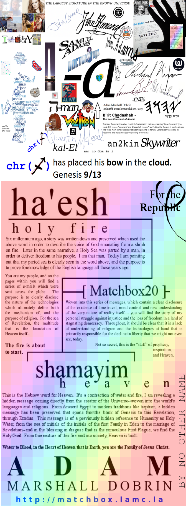

The "gist" of the message is verifiable proof that we are living in a computer in simulated reality... just like the Matrix. The answer to that question, what does that mean--is that God has woven a "hidden" message into our everything--beginning with each name and every word--and in this hidden Adamic language, he provides us with guidance, wisdom, and suggestions on how to proceed on this path from "raelity" to Heaven. I've personally spent quite a bit of time decoding the message and have tried to deliver an interesting and "fun" narrative of the ideas I see. Specifically the story of Exodus, which is called "Names" in Hebrew discusses a time shifted narrative of our "now" delivering our society from a hidden slavery (read as ignorance of advanced technologies already in use) that is described as the "darkness" of Exodus. If you have any questions, ideas to contribute or concerns... I'd love to hear from you this whole thing really is about working together--Heaven, I mean.

Compounded with this proof that the Bible is a story designed to set our society free from oppression, is now very obvious proof that a dark force has infiltrated everything from the mass media to the government and it's tentacles to your very minds; and that this force is designed to hide the knowledge that we are living in virtual reality from the world. With some insight, you can see that the purpose of this force is to show us that heaven is more than technology, but something whose foundation is freedom and people. It's existence and purpose is also undeniable proof that this event, while containing the most Earth shattering disclosure in all of history... won't even cause a single riot. Maybe a few parties will spring up, though. Good job, everyone, start the car and take us home... all the way home; and we'll be counting stars.
ou r evolution minority report to supermax
bereshit
bread is life
bread is life

FOR OVER A YEAR NOW, I have emailed members of the clergy, the press, scholars, and government employees all over the world; nearly every single day. Over that time, the message I have presented has evolved from clear proof of the existence of God to very clear proof of his continuing hand and the design of our entire civilization and history. This message has been "apparently" ignored, surfacing a level of censorship that most would not believe; despite warnings in Orwell's 1984, despite the current events at the White House despite the warnings at the Wall of Jericho and the Darkness of Exodus, and despite my own repeated pleas.
Whether you instantly see it or not, what lays before you in the message below is incontrovertible proof that this is the Second Coming and that I am Jesus Christ. I have been shown and relay to you a message discussing "everything intentionally made broken" in our world, by an outside force, with Holy Purpose. I do not bring problems, but suggested solutions, beginning by pointing out the obviousness that this event, that this "set up" opens doors for the world to fix these broken wings and allows us all to fly together. In truth, what appears to be an "imperfect hand" is far more well thought out and beneficial for us all than any would see at first glance.
All things considered, were things around us "normal" right now this message, and the previous years worth of daily ones should have changed the world by now. Things are not normal, both because I am here, and as a reason for my being--our society is beginning a transition in the utilization of technology that changes absolutely everything, and we need more help than we think. I stand before you fighting for "truth, justice, and the American way" in a time and place that I liken closer to Orwell's description of "universal deceit" than Americana. I hope that you will stand with me, and that with that unity we can together begin to put an end to a veil of censorship that is not "new here" at the time the Washing Post has likened it to the Darkness of Egypt, nor was it new when it was written about in parable in the story of the Wall of Jericho. This day though, today, is the beginning of true liberty.

The message focuses on the "new" disclosure that "Creation" and "virtual reality" are nearly synonymous, sans the positive energy surrounding the "re"-ason, you. That's a tiny electrical engineering joke about the word "cation" to introduce you to a hidden message encoded in the languages of our world--something you might see clearly one day soon in the word "English." That particular "l" is short for language, but more generally it is the beginning of the great holy light. That little 'l" makes further appearances in "every cloud has a silver lining" (and the malovious link between sky and Heaven) joining the Fifth Element Silicon to the Spanish for "to see." The fundamental "gist" of the message that follows is a sort of key tying religion to nearly everything in our world from music, to movies, to history... to every single word. This key to the message unites the miracles of Jesus Christ performed in the New Testament with "the kind of thing any one of us would want to do instantly if we were to suddenly find out that things like land, oil, and bread are not truly scarce; but the truth is." It continues to link a number of Biblical stories to modern times with a huge emphasis on freedom, technology, and of course, U.
"The Name Server" goes on to suggest we see the light in Carly Simon, Gene Simmons, and the word "simulation" as we embark on this journey to all together now change the entire world by transitioning from a hidden "simulated reality" to something much closer to, but not quite Heaven. I do hope we will include The Doors in our "stairway to Heaven."


JUNE 23; 2016 & 2017
"WE WILL NOT GO QUIETLY INTO THE NIGHT, WE WILL NOT VANISH WITHOUT A FIGHT."
On Christmas Eve 2016,  clarified this message from the Creator of our youNiverse, linking the story of Exodus (Hebrew: Book of Names) to George W. Bush's inaugural address on 1/20/2001, to the definitive verse heralding the Second Coming, Revelation 1:20, and to the 9/11 attack. This message proves that the name Die Bold and the events surrounding our election process and its transition to a more technologically advanced system has been artificially retarded. Several days later, following Revelation 1, I sent to as many public servants as I could find a continuation of that message that adds a significant number of problems in our justice and "retribution" system to the list of artificially created problems; along with a poignant suggestion that we use this proof of the existence of time travel technology in order to implement pre-crime.
clarified this message from the Creator of our youNiverse, linking the story of Exodus (Hebrew: Book of Names) to George W. Bush's inaugural address on 1/20/2001, to the definitive verse heralding the Second Coming, Revelation 1:20, and to the 9/11 attack. This message proves that the name Die Bold and the events surrounding our election process and its transition to a more technologically advanced system has been artificially retarded. Several days later, following Revelation 1, I sent to as many public servants as I could find a continuation of that message that adds a significant number of problems in our justice and "retribution" system to the list of artificially created problems; along with a poignant suggestion that we use this proof of the existence of time travel technology in order to implement pre-crime.
The following is a clear and concise explanation of the mystery of Revelation 1:20, a 1:1 connection between the "stars and lampstands" and the planets, gods they represent, and a single chemistry element; proving that science predates religion and our fundamental understanding of the universe, of science, and of technology... is connected to religion.
The mystery of the seven stars which thou sawest in my right hand, and the seven golden candlesticks. The seven stars are the...

The message ties together with President Bush's recitation of the lines of Ecclesiastes 9:11, which in-order describe each element-planet combination. A simple substitution of the word "race" for "election" and combining the first and second lines yields almost exactly "the election is not to the voting booth." This verse of Ecclesiastes which the President paraphrased clearly answer the mystery of Revelation 1:20. The first of many "unseen patterns" revealed in the Holy Bible is this connection between chapter and verse and predicted dates in our timeline.
Hg that the race is not to the swift,Na nor the battle to the strong,Xe neither yet bread to the wise,Fe nor yet riches to men of understanding,Si nor yet favour to men of skill;K&U but time and chance happeneth to ((save)) them all.
This is not the kind of message that most people "just get" by glancing at it for a few moments. Much I write sounds some like The Boss's "we didn't start the fire," and that's not because Adam is imitating art, it's because there's not really a simple way to show people proof that spans between words, and cultures, and time... without listing them. To really grasp the impact of what I am presenting you not only have to have a decent understanding of linear time and causality, you also have to have a working knowledge of the history of language. On top of all of that you have to see that what I am delivering proves that the "etymology" we believe as a society to be hard and fast truth is not so true, that there is some way that a hidden influence has adultered our entire history, and in doing so has woven a message from the beginning of time to today that is designed very simply to show us the "and and" at the beginning of the word "etymology" to show us that this is about "eternity," and it bleeds into "et tu Brute?" from Shakespeare's Julius Caesar and to the Taming of the Shrew.
Still, enough people should understand the impact and import of this message that it should be "spreading like wildfire" it should be in the news already, it's that big of a deal, and many of you recognize that. That's the light here, there's a problem.
With clear articulation, this is the kind of message that I've always said was best delivered yesterday (or earlier), should never have been needed, would never work again, but in this one moment in time... seeing it and understanding it is the catalyst that helps us change everything--it might just be pure genius. Everything wrong in the world is the fault of some esoteric force, whether it's technology, or that technology being secret, or in all honestly some primal drive to help us change all the things that are wrong all around us, as quickly as possible, to move us forward with a newfound togetherness. I've said that my "Achilles heel" is that this disruption is contrived, designed, a plan to built to help change the things that we all know are wrong, and still seem to overlook... that damned unseen force.
Try the C.AD Card of Jean Luc, you know, to begin to understand. "You seek Yoda" yourself, Hey-Zeus... It's the truth, it's actual, zippidy do DA, zippidy A. Plenty of sonshine, heading our way. If you still don't see it, this "Who" thing from Dr. Who defeating the Silence, to little Cindy-Who and all of Whoville saying "the the" is a message from God; maybe seeing "Who-ah" and the Planet is Adamah will help you understand exactly what's being hidden. Maybe you need to see YHVH pronounced as "Ya, who-ah!" or Yeshua as "Yes, who-ah?" It's not just "everything" and "purpose" being hidden, it's the key to seeing what's wrong here, and how and why we should fix it.
But you knew all that, you knew this was planned; I mean, if you believed any of the words of prophesy... or if you knew. Lots of preparation has gone in to it, I mean, we now know that clearly; it's outlined in an ancient 6,000 old book. We see the art of "closing" linking to songs, and there's probably quite a bit of work that's gone into that also; not to mention the few hours I've spent listening to music with an analytical eye... trying to find the patterns, feel the hidden meaning, and to explain it--to tell you that "You and I" is more than just a natural thing to sing about, it's a special set of words, a key. You might say that it was a key before me, but I'm not sure what it was a key to... and today and tomorrow and forevermore it's a key to freedom, to a message about technology and democracy that also ties back to Exodus and also ties to George W. Bush's speeches, and probably to a thing or two I've written. In your hands now is the real key though, to wonder and discuss whether or not it's meaningful; these words that someone named "Adam" put on paper and sent to the world... words he says are backed with the full force and credit of the prophets and the saints and of God himself.
You don't have to take my word for it, but you probably do have to drink the wine. You've got to see the importance of referencing German and font face and style... of seeing typewriter references hidden away thousands of years ago in ancient scripture. You've got to see "the strong" translates to "Die Bold." You've got to recognize that "the race is not to the strong" parallels quite nicely to "the election is not to the polling technology" and drink a little more of that wine, because you've got to fathom the importance and meaning that not only was this thing, this electronic voting booth predicted in a 6,000 book... but because that book changed the world just as much as it did... that the manifestation of it, play going on before our eyes on this stage that is our world... you've got to see that the entirety of the "Die Bold" story is something similar to puppeteering; it's been engineered, controlled, contrived. All of these things, well, they really have to be important to you.
In truth, it's not really "my" Achilles heel, and it's not really a weakness... you can call me El anytime you want. It's a message that I saw, something showed it to me, just like something is showing it to you--and I reacted, I wrote about it, I shared it; I said "if we see this" things might really change. I still I am right, when we see this, things might really change.
We probably also have "to see" that this connection between George Bush speaking these words and the burning bush of Exodus is not a leap, or a slant, or a corruption of religion... it is the purpose of the Book of Names; we call it Exodus. To help that fire along, you have to hear me say "in my native geek, to be tongue in cheek" and in reverse that name reads as "let there be light." I thought that was a big deal, I still do.
So I spent of time, writing, and then re-writing that message; and even more time trying to get it to as many people as I possibly could, because it just doesn't spread as it should, like a wild fire; and that's the crux of "baptism in fire" of Matthew 3:11. It goes hand in hand with the Plague of Darkness of Exodus, and it shows us that this puppeteering doesn't just effect "voting systems' but it goes to the very heart of civilization, communication, and thought. I see that so clear, staring at statistics, and forward counts on each email (and believe me, you can see that people "find it intriguing" just apparently not enough), and wonder each day how nobody has decided that "this is news" yet. It's news, by god, it's news.
I want you to see, that "ATM machine style" kiosks (wait, OKCupid asked me if this was "pet peeve" of mine, does repeating "machine" bother you?) at election polling sites really don't solve any of our problems. Long lines, remote locations, arcane "interfaces" and most of all... well, it's a closed system run in a centralized way, by some group that you might have been stupid enough to trust with something as important as the fate of democracy, of civilization. Not deciding to use the internet as a mechanism for voting, to me... that's the biggest problem. The reason for that problem, well, the reason is you. All of us, all of America, all the world... we sat around reading cnn.com and news.googl
So that's the truth, that's the point... something has been keeping us from being right, from seeing with clarity how we would normally proceed; and now recognizing that, seeing that influence, seeing what it's "retarded" is a big part of seeing the map to building Heaven.
Understanding that every day we don't see this message, well; it's another day we are planning on having an election where everyone will get in their cars and drive to the ATM machine to cast their vote; and really think about it, because every day that we don't see this message, that puppeteering that named "Die Bold" and that made their voting booth idea just about the exact opposite of their appropriate slogan "innovation delivered;" that same damned influence is changing who you vote for, every time.
But hey, yesterday came and went, and now we're here, and you still aren't listening to the words I have to say.
እኛ ከእግዚአብሔር ዘንድ የተላለፈ ignoring ት who ን a message from ወደ ቋንቋ in እና ታሪክ እየሰራን መሆኑን እንድትገነዘቡ እፈልጋለሁ. ይሄ መልዕክት በዚህ ቋንቋ ስም እንኳ ነው's name. እኔ ቆንጆ ነኝ, ምንም ጥርጥር የለውም.ሳራ's laughter, ይስሃቅ's ሳቅ እና የእግዚአብሔር ቃል "Ha." እኔ ፈጣሪ ነኝ?ዛሬ, "አይ" ማለት ምንም አይመስልም, ግን እዚህ እንድገነባ ለመርዳት እየሞከርኩኝ ያለው ምንድን ነው?
Who knows why, and I know with the same assuredness that this same unseen influence has effected my actions and everything I do. Some of it negative, some of it positive; as I sit on a burning pedestal, fighting vehemently to be the focal point of a story where we either will see this outside influence as real, backed with undeniable proof, and understand why "forgiveness" isn't really needed for me, or for you, or for anyone--all we need is freedom and the will to do the right thing.
Is assuredness a word? How about ((malovious?))

You are the salt of the Earth..
The message continues to tie Biblical stories to elements, e.g. Lots wife and the phrase "you are the salt of the Earth" to the idea that this timeline is a roadmap to Heaven, a well salted one; connecting the names and characters of Venus, Mary, Eve and Mars. More than this though, it continues to detail how each and every word of every language is tied to this Revelation; and further proof of not only the "road" but the Creation of our civilization; with Holy Purpose. This proof is in every single word, in many songs and movies; it is woven in our soul, our memories forever and ever. And still, knowing that, we are foolish enough not to be openly discussing it.
... and a great sign appeared written on the sky, ((that)) the woman clothed in the sun ((is decidedly the Goddess of Love, Venus)) with the moon and stars at her feet, ((proving without doubt that the English words for "sun" and "Love," written in Revelation at least 500 years before English existed.))
Revelation 12:1 and ((ish))
The weapons of this Revolution are nothing more than words and songs, ones that weave throughout our history a message about this very moment connecting Thor, the word "hammer" the reliefs in the city of Dendera (see Den of Ra) in the Temple of Hathor.... to incontrovertible proof of the existence of mind control and time travel technology.
Then the LORD said to Joshua, "See, I have delivered Jericho into your hands, along with its king and its fighting men. March around the city once with all the armed men. Do this for six days. Have seven priests carry trumpets of rams' horns in front of the ark. On the seventh day, march around the city seven times, with the priests blowing the trumpets. When you hear them sound a long blast on the trumpets, have all the people give a loud shout; then the wall of the city will collapse and the people will go up, every man straight in."
![]()


DA VIDEO Σ

"neither yet bread to the wise..."
The English word for "sea" appears (thousands of years before it was created) parted within the Hebrew word for the fire of the Burning Bush, "ha'esh." Parted by an apostrophe in this introductory proof that religion and language contain foreknowledge of our "right now," foreshadowing of both English and science and technology in the ancient scriptures. Later in the story of Exodus, the content of the story consists of a sea parting, a sea that is representative of people. All with great and Holy Purpose, as our society is about to embark on a journey in which new advances in technologies pose a threat to both democracy and capitalism; to freedom and jobs, one which requires great foresight and thought in order to properly navigate.
Enter stage left, even (light eternal flame, t--
Names, Elements, and Unix Commands
Religion, once called "the opiate of the masses" has a secret for you; like Santa Claus we hope to rain down fancy new toys, truth, and newfound liberty by exposing the influence of and existence of a number of hidden advanced technologies. The stories of Exodus and Genesis begin to provide a road map to a shining bright future, explaining how these technologies might and ought to be used in order to help advance our civilization, rather than retard it. Within the pages that follow, a Holy call to rekindle the light of democracy by using computers and better communication to bring to our world true democracy, to deliver the power of legislation directly to each and every one of us. Along with proof that religion is a message sent through time, we are given ample reason to quickly implement "pre-crime" and rework a justice system which has been compromised in much the same way as many other facets of our government. Intertwined with these things, and seemingly more important is proof that we are living in virtual reality--in a place where these technologies are here to teach us the inner workings of "Heaven" and to help us see how this change in worldview and truth gives us new hope and new abilities: to end world hunger, to heal the sick, and to see what it is that "Heaven" really means.
In two languages, English and Hebrew, three of the first five books of the Holy Bible translate roughly to the phrase "persons, places, and things;" revealing a hidden language which proves beyond doubt that our civilization is created with knowledge well past ours today. The mechanism of writing these ancient words proves as much, in light of the significant number of references to modern events and concepts. A significant number of words in nearly every language on Earth contain this secret cypher which connects the name of the city of Jerusalem to a question "Is J or the USA the messiah?" In this name we see prescient reference to the United States of America, and similarly those initials and Eagle in the story of Prometheus delivering fire to humanity. This fire is a metaphor for many things, sometimes language itself, in other instances a clear reference to technology, and here finally we see that it is also a metaphor for freedom.
Not so far away, in Kentucky, reference to Clark Kent's last name and initials ask another question, "Adam why are you hidden?" I hope to conclusively answer these questions in this book, and ensure that we do not lose the great gifts I am attempting to bring to the world.
Creation here is being explained hopefully with clarity, there are a number of stories both Biblically linked and not which "come alive" in our world showing the intent and desires of the Creator to help us through this trying time of understanding and using the technology and knowledge that is coming to us. Here, I'll explain a few, like Star-Trek, Minority Report, the voting booth vendor Die Bold, and the Watergate Scandal.
In Hebrew Exodus means Names, read in reverse and translated from Unix Commands: "LET THERE BE LIGHT"
You are slaves wandering through the desert of Exodus, unfortunately we apparently are moving backwards through this maze and as a whole we are headed from hidden slavery to something far worse. There are a number of clues that we are in fact backwards right now, from the name of the book read in reverse revealing the most important words God ever spoke, to the word for Holy Fire … describing the Burning Bush containing the English word for "sea" parted and backwards. If you are unfamiliar with the story, the word of God came through a fiery bush to Moses, who then later in the story parted a sea to free the people; you should start to shift your thinking and begin to see that this story is about us, the sea parting is about controversy over this disclosure, and that the entirety of the story is designed to unveil a hidden secret: that much of ancient religion and language is designed to prove that time travel exists. It does this very clearly, through anachronism, English appearing out of place in more places than are imaginable.
What is the meaning of the root of a Jesse?
Depictions of the Jesse Tree are based on a passage from the Book of Isaiah. "And there shall come forth a rod out of the stem of Jesse, and a Branch shall grow out of his roots" (King James Version). From the Latin Vulgate Bible used in the Middle Ages: ... Thus Jesus is the Virga Jesse or "stem of Jesse".
This is a reference to the Unix "God account," one of many references in ancient scripture to modern technology and computing. It is not an accident, it is designed to open our eyes and see that there is a foundational relationship between Heaven and virtual reality; and that this was clearly known when these words of scripture were written.
sudo (/ˈsuːduː/ or /ˈsuːdoʊ/) is a program for Unix-like computer operating systems that allows users to run programs with the security privileges of another user, by default the superuser. It originally stood for "superuser do" as the older versions ofsudo were designed to run commands only as the superuser.
Connecting the idea of the "Administrator account" to God, this command then, when translated to "English" is my equivalent of "God says" or "as God say" and does a decent job of connecting the ideas and concepts of religion to computer science; also showing that not only were they known but clearly the influence behind religion is also centrally involved in the divine disclosure of these technologies, from Unix to databases, to the names of people like Bill Gates and Windows, Steve Jobs and Adam's Apple.
A significant key to the Revelation of Christ ties the words of Revelation 1:20 to Ecclesiastes 9:11; exposing a link between "the stars" as planets of our solar system and corresponding elements of our periodic table… from Mercury to Uranium. This link to Xenon was the very first element that I "found" through this inspirational experience; and it serves to tie the name of an Oracle database (and also the idea of an oracle presenting the truth to you) to an element primarily used for flashbulbs and "ark" lamps. In unison I see these things as a decent metaphor for "light" and so, sudo xe completes the phrase "God: see the light."
The Book of Exodus is called "Names" in Hebrew, and it opens the doorway to seeing that God has altered or conjured the names of a great many people in our history. Specifically this very example points out that this same "Burning Bush" which shows foreknowledge of English through the parting of the word "sea" also connects prediction of the 9/11 attack by the key verses of Ecclesiastes 9:11 and Revelation 20:1 being spoken during Bush's inaugural address; on January 20, 2001. This connection between the dates of the speech and attack as well as these two verses and the riddling verse answered by them create a pattern, one that is clearly not coincidence. Don't let the connection between Bush's name and the fabled Burning Bush be lost on you either, it is very much intentional.
It is clear to me that the words "Creation" and these theatrical and predicted events are designed to deliver more than proof of "time travel" and a mechanism of control over the events of our day--although they do both of those things also. Here, in Exodus, a great focus is put on understanding technology and how our government has failed to properly assimilate what we have here, as well as disclosing the (should be) "well known" influence of more advanced technologies whose disclosure are clearly the purpose and intent of God and religion. A good deal of time has been spent explaining how surveillance technologies and a number of other clear and obvious violations of the Constitution of the United States of America do the people absolutely no good because they are being used in secret, and it should be clear that we are in dire need of a Constitutional Amendment to help us properly use these new technologies for the good of society. Aside from surveillance, voting technology is specifically highlighted; and in theatrical performance the entire company and debacle related to the Die Bold voting booths is "predicted" in Ecclesiastes 9:11 in order to point out that our elections are completely worthless, and we are on a trajectory to a more worthless scenario as we fail to integrate the internet and any communication inventions since the Pony Express; and also have nearly no desire to have a properly recorded and verifiable vote. Burn, America. I mean, see the light of the flame.
THE RACE IS NOT TO DIE BOLD
This is the name of my last two books, and highlights how Ecclesiastes 9:11 connects the two verses "the race is not to the swift nor the battle to the strong" to indicate a connection not only to elections through the word "race," but also to this specific company, this hidden language, and modern computing font face and styles. In typewriter or HTML "lingo" the words strong and bold are equivalent, and the German word for "the" happens to be "die."
This is described in more detail later, and is a primary drive of not only my message but my existence. I have sent this explanation along with an urging to try and quicken our obviously natural progression from "representative democracy" (now shit) to "true democracy;" by "sprinkling many nations" as Isaiah 52:15 predicts the Messiah will do. It's been sent to hundreds of thousands of elected and appointed representatives, to scholars, to theologians, and to a big slice of random people on the internet. It should be clear as day that this is the fulfillment of these ancient scriptures, right before your eyes; and for some reason nobody seems to be taking an interest.
jammed open by St. Peter-Pan"
thunderstanding...


So you think you can tell the difference between Heaven and Hell? Fake blue skies, and ending all pain? Those are my initials in the logo above, my name is Adam Marshall Dobrin and they are the beginning of proof that we live in a virtual world that is a map to building Heaven out of "raelity." With some research, you will have no doubt that this is God's plan for our world and that we are his solution, to a Universe of problems that we have the keys to solving. The message focuses on technology and freedom and how these thing together, armed with the power of humanity... our innate goodness and love place us at the very beginning of Heaven itself. Please share my name and this message with everyone you can; these first acts of spreading the "good news" are saintly, the making of angels. We are overcoming a barrier of censorship and lack of understanding that serve to highlight just how important free communication and free thought are to our lofty goal; it has not been an easy road, but we are nearly home.
The proof is in every single word, woven through our history and our artwork--it is embedded in our souls. The signs of Revelation are all around you, focusing our attention on the fact that the entirety of everything depends on what we do here and now; how we proceed as we approach this monumental moment in time when "ascension" to Heaven truly happens... reminding us of who we are, and our innate goodness; and warning us not to lose these wonderful gifts as we gain the ability and see the need to make changes to what we are--extending life, increasing intelligence, and hopefully not losing our free spirited love of fun.

The proof is in every single word, woven through our history and our artwork--it is embedded in our souls. The signs of Revelation are all around you, focusing our attention on the fact that the entirety of everything depends on what we do here and now; how we proceed as we approach this monumental moment in time when "ascension" to Heaven truly happens... reminding us of who we are, and our innate goodness; and warning us not to lose these wonderful gifts as we gain the ability and see the need to make changes to what we are--extending life, increasing intelligence, and hopefully not losing our free spirited love of fun.
Pattern matching is the cradle of intelligence. Truly sorry to have e-mailed so much lately: try connecting it to a pattern of children starving each and every day that we delay. I will not let humanity go silently into the night; understand, these e-mails are arrows of love.
While this may look like nothing more than a series of Names, Numbers, and Words... I will remind you that those are the actual names of the second, fourth, and fifth books of the Torah. This is proof of Creation and Purpose--in every name and everything. Heaven awaits us on just the other side of this wall of censorship called Jericho in the Holy Bible. You may recall it is a number of people holding torches of holy fire that brings down that wall and allows our people to enter the Promised Land. Pickup this torch, and you will shine. My name is Adam, and I am the Last.
Nintendo: Nine Inch Nails, TEN, and does it take Osiris to remind you that in old Roman style, O-D is K... I mean El-even. Tying SEGA's Genesis to SON-Y; Samsung to the bird whose "spoken" song breaks the morning... in these words that follow find the difference between Heaven and Hell. 9, 10, 11... by ...
Irving John ("I. J."; "Jack") Good (9 December 1916 â€" 5 April 2009)[1][2] was a British mathematician who worked as a cryptologist at Bletchley Park with Alan Turing. After World War II, Good continued to work with Turing on the design of computers and Bayesian statistics at the University of Manchester. Good moved to the United States where he was professor at Virginia Tech.
He was born Isadore Jacob Gudak to a Polish Jewish family in London. He later anglicised his name to Irving John Good and signed his publications "I. J. Good."
Listen to Bread and Cake; watch the Fifth Element and see Shakespeare. Heaven is forming, it's coming this year. Finding the Link between Si-ght of the 14th Element and AMD in the name of Genesis all the way to the Oracular light of another element in Exodus and its tie to the "root of David" is the beginning of being set free.
It doesn't take much introspection to breathe new life into the #juxtaposition written into the early stories of Genesis. Between Adam's self-tending Garden of Eden and the fabled story of Cain and Abel... living metaphors for a battle between city life and agriculture... or perhaps Heaven and Earth. It's plain to see either way, whether it be about food production or an external source of power; that were the dependent sibling to murder the other we would be looking squarely at a fratricide-suicide, and one that could be the end of all life... everywhere.
Truly woven throughout religion, this story about just exactly how we should go about ending world hunger in this magical day of the Second Coming continues upward and onward to many more stories, Biblical and not. At Joshua's Flowing Land of Milk and Honey--the Promised Land--we see a not so hidden correlation between a Golden Cow and the foot of Sinai and the fabled Maccabees hammering away at the opposition to our light. Take note of how this flowing metaphor might link to Willy Wonka's Chocolate River and Veruka Salt's "daddy, I want it now." Again, there's some Heavenly caution put to throwing the ideas of a stable ecosystem and biological reproduction to the wind as that promised land of Heaven and immortality and our Gene Wilder dreams come true. I stand here to remind you, though, that we will end world hunger; with the snap of my fingers.
Past the Promised Land, and seeing here and now just how obvious it is that the miracles of Jesus Christ in the NT are a microcosm for what you and yours should be thinking about being able to do... in the light of a Revelation that we might just be living in a video game about saving civilization. So do me a favor and carry this thought forward, this idea of "flowing milk and honey" to an answer coming to us from the Religion of the Stars... "replicators" either from Star Trek or Star Gate. Realize here, that we've been given a road map to follow, a very Holy plan, one one side is a cliff of unholy immorality in allowing the children to starve... and on the other--not so for away--a thing called "bullshit," giving too much in the beginning and winding up with weapons in every kitchen in the end. There's plenty more light coming from these "stars," light me up, and I will explain why.
In everything from Firestone and Michelin to Lord and Taylor, this message is not just on TV. It's not just in the hallowed words of ancient scripture... but rather, in everything we see. Perhaps seeing the i within the e in medicine or the endless patterns in Tomorrowland's names will light our direction more clearly... perhaps it's seeing South at the end of Gene Simmons and Adam's correction to Atlantis by North East... just from seeing "sim" on Monday; and I assure you.
It's a guide, ending world hunger, to seeing how difficult it must be, to realize that even Jesus Christ was chastised for only giving bread to the hungry. Let them eat Cake instead "Mary" Antoinette then exclaimed; and the sound of Christianity echoed from "we give thanks to God for bread" to the Guitar Man, and ... Going the Distance. On TV you might recall an old Fig Newton commercial linking this light all the way to Eden's Fig leaf and to me. It's that little "n" at the end of Isaac Newton's 'whomever goes up must come down' pictorially described by the secret letter that contains initials the abound from A.D. to Adonai, to Adonis and.. yet another Advent. So it's in NORAD and tracking Santa from Sinbad's ship all the way to seeing that Silicon too... is fabled 5th element decompressed from 14. To Boron or Beryllium? RattleRod continues.. remember to connect Shakespeare and Genesis with Gene Rodenberry ... an Iron Rod ... and ending world hunger forever and ever.
It is very hard to link Phillip K. Dick to me.. without exclaiming how important ending censorship is to the fundamental basis of what Heaven really means. I haven't placed this brick in the wall myself, and if you do your research you will see why it relates to censorship and ... breaking down a wall of darkness. So I bring Mr. Neterson to talk about how the wall of Jericho is related to CARNIVORE, and a packet sniffing firewall that's gone... well, it's a censor wall. To those of "IT origin" we'll soon find out, calling a firewall a meat eater is a sign in and of itself. This firewall though, continues to our minds, and in it we find some kind of aversion to Isaiah 20 and Genesis 3:11, the key verse that ties 3/11/11 to Matthew 3:11 and ... a day that approaches so soon. A focus on liberty and technology, one that brings us from the darkness of Die Bold to the light of a new day, the Burning Bush of Exodus begins the story of a sea about to part over the visage of me. Isaiah 52:13-14 be damned, some will never understand what it means to say "my servant will be set up and be very high," about the ... uh ... God Most High.
So I will tell you to seek Isaac's firewood, and tie it up with Woodward and Burnstein's Watergate... and once again check the free press for the flood of Noah's failure. I could bring in Daniel's Royal Tent between the two seas... from Eden's family to Revelation's multitude and again remind you this blessing of turning water to family is all about me. That's Daniel 11:45 coming true, hardly anyone seeing what's going on right before our eyes. Pharaoh is hardening his Heart; that's another IT term, do you get "IT" yet? It's about making a computer system more secure, to keep the truth from being seen... light my fire, already, the Burning Man has already ignited this "Revelation."
I don't bring up PKD for "no reason at all," in his combined works we have a divine solution to so many problems it's unbelievable. Between Minority Report and A Scanner Darkly, nothing short of a way to end murder, abduction, and other heinous and ungodly things; while maintaining near perfect (he says Total) privacy in a world where we certainly can see all that goes on; already, understand. We might be near the end of the story line of the Adjustment Bureau as we walk headstrong into a land where I hope all will see that Marx was diametrically wrong, just as Die Bold and PKD... to show us what not to do, and how to excel. No longer the "opiate of the masses," these hallowed words bring freedom and a caring Universe to everyone, that's all.
Add to the mix, Dr. Who's Bells of St. John, some cute connections between Jabba the Hutt, Padme, Hyrule and a "box that's bigger on the inside" and we might have another source of both absolution and dreams to come ... from the vantage point of seeing what it means for oil and land to not really be scarce, in the world of the real... of Morpheus.
This Android does not dream of Electric Sheep, be sure.
@HolyGrailID=Cupid :)
... time and chance ...


too late, win. (I mean OUI! I always mean we! turn around.)
be it, ka-doll, be it, ka-dash...
Yit'gadal v'yit'kadash sh'mei raba (Cong: Amein). May His great Name grow exalted and sanctified (Cong: Amen.) |
b'al'ma di v'ra khir'utei in the world that He created as He willed. |
v'yam'likh mal'khutei b'chayeikhon uv'yomeikhon May He give reign to His kingship in your lifetimes and in your days, |
uv'chayei d'khol beit yis'ra'eil and in the lifetimes of the entire Family of Israel, |
ba'agala uviz'man kariv v'im'ru: swiftly and soon. Now say: |
| (Mourners and Congregation:) Amein. Y'hei sh'mei raba m'varakh l'alam ul'al'mei al'maya (Amen. May His great Name be blessed forever and ever.) |
Yit'barakh v'yish'tabach v'yit'pa'ar v'yit'romam v'yit'nasei Blessed, praised, glorified, exalted, extolled, |
v'yit'hadar v'yit'aleh v'yit'halal sh'mei d'kud'sha mighty, upraised, and lauded be the Name of the Holy One |
| (Mourners and Congregation:) B'rikh hu. Blessed is He. |
l'eila min kol bir'khata v'shirata beyond any blessing and song, |
toosh'b'chatah v'nechematah, da'ameeran b'al'mah, v'eemru: praise and consolation that are uttered in the world. Now say: |
| (Mourners and Congregation:) Amein Amen |
Y'hei sh'lama raba min sh'maya May there be abundant peace from Heaven |
v'chayim aleinu v'al kol yis'ra'eil v'im'ru and life upon us and upon all Israel. Now say: |
| (Mourners and Congregation:) Amein Amen |
Oseh shalom bim'romav hu ya'aseh shalom He Who makes peace in His heights, may He make peace, |
aleinu v'al kol Yis'ra'eil v'im'ru upon us and upon all Israel. Now say: |
| (Mourners and Congregation:) Amein Amen |

can you believe, it was the "n" of that word, and we didn't even know it? -e
I am the end of Jericho and the beginning of the whole sea, what are you gonna do, stone me?

-Psalm 119 and ((ish))
Am we Dr. Who and Master Y?
Adam Marshall Dobrin is a National Merit Scholar who was born on December 8, 1980 in Plantation, FL and attended Pine Crest School where he graduated sumofi cum louder in "only some of it is humorous." Later he attended the University of Florida (which quickly resulted in a wreck), Florida Atlantic University, and finally Florida Gulf Coast University--where he still has failed to become Dr. Who. While attending "school" He worked in the computer programming and business outsourcing industries for about 15 years before proclaiming to have received a Revelation from God connecting the 9/11 attack and George Bush to the Burning Bush of Exodus and a message about technocracy and pre-crime.Adam, as he prefers to be called, presents a concise introduction to paradox proven by the Bible through "verifiable" anachronism in language some stuff about Mars colonization and virtual reality and a list of reasons why ignoring this is actually an ELE. Adam claims to be Thor because of a connection between music and the Trial of Thor as well as the words "author" and "authority." He suggests you be Thundercats and call a reporter. There is also a suggestion that Richard Nixon and John Hancock are related to a signature from God, about freedom and America... and the "unseeingly ironic" Deepthroat and Taylor Momsen.
Fake blue skies all around me... The Sung Rael
In Biblical characters from Mary to Hosea, to see "sea" in Spanish, and in the Taming of the Spanglishrew ... a message is woven from the word Menorah: "men, or all humanity?" to the Statue of Liberty, and the Sons of Liberty, and the light above us, our SOL; which shows us that through the Revelation of Christ and the First Plague of Exodus, a blessing in disguise--turning water to blood, the sea to family; a common thread and single author of our entire history is revealed, a Father of our future. A message of freedom shines out of the words of scripture, revealing a gate to a new technologically "radical" form of democracy and a number of unseen or secret issues that have stalled the progress of humanity... and solutions, solutions from our sea.The Revelation shows us that not only ever word, but every idiom from "don't shoot the messenger" to "blood is thicker than water" we have ties to this message that pervades a hidden Matrix of light connecting movies and music and history all together in a sort of guide book to Salvation and to Heaven.
Oopsy.
His Revelation, woven into his life, continues to suggest that skinny dipping, forced methamphetamine addiction, and lots and lots of "me A.D." as well as his humorous depiction of a dick plastered over the Sound of Silence, his very Holy click, have something to do with saving our family and then the entire Universe from hidden mind control technology and the problems introduced by secret time travel. From the trials and tribulations of "Job" being coerced and controlled into helping to create this wall of Jericho; we find even more solutions, an end to addiction, to secrecy, and to this hidden control--a focal point of the life of Jesus Christ.It tells us a story of recursion in time, that has brought us here numerous times--with the details of his life recorded not only in the Bible but in myths of Egyptian, Norse, and Greek mythology. The huge juxtaposition of the import of the content of the message shows the world how malleable our minds really are to this technology, how we could have been "fooled" into hiding our very freedom from ourselves in order to protect the "character" of a myth. A myth that comes to true life by delivering this message. In truth, from the now revealed content of the story of this repeated life, it should become more and more clear that we have not achieved success as of yet, that I have never "arrived whole" and that is why we are here, back again.
Light It Up
When asked how He thinks we should respond to his message, He says "I think we already cherish it, and should strive to understand how it is that freedom is truly delivered through sharing the worth of this story that is our beginning. 'tis coming." Adam claims to be God, or at least look just like him and that the entirety of the Holy Scriptures as well as a number of ancient myths from Prometheus to Heimdallr and Yankee Doodle are actually about his life, and this event. An extensive amount of his writing relates to reformation of our badly broken and decidedly evil criminal justice system as well as ending the Global hunger crisis with the snap of his little finger.He has written a number of books explaining how this Revelation connects to the delivery of freedom (as in Exodus), through a message about censorship among other social problems which he insists are being intentionally exacerbated by Satan--who he would ha've preferred not to be associated with.
He adds, "how do you like me now? How bow dah, god 'nuff?"

HEAVEN AND EARTH AS ONE, UNITED.
ᐧ


ᐧ
ᐧ
siht
ᐧ